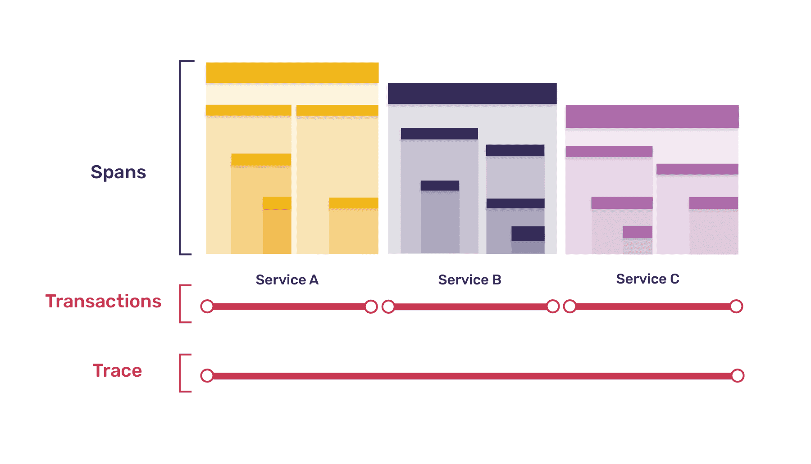

Sentry是开源前端监控软件。
- SDK丰富，可集成多种语言和框架。
- 功能强大，包含异常检测，性能监控，路径追踪。
- 后端能处理大规模数据，可用于生产环境部署。
本章从源码出发探讨前端监控SDK的原理，主要回答以下问题：
- 如何收集错误？
- 如何收集性能数据？
- 如何追踪路径？
- 什么时候发送数据？
- 怎么发送数据？
- 如何扩展Sentry SDK？
从入口开始
在分析具体问题之前，我们回到代码的入口，查看具体的代码做了什么事情。
以VUE为例，Sentry的集成代码如下：
1 | import Vue from "vue"; |
在init函数里面。核心是两行代码：
1 | browserInit(finalOptions); |
browserInit来自@sentry/browser包。这个包主要对代码进行插装(Instrumentation)，记录每一次操作。
vueHelper.setup()设置错误处理器(_attachErrorHandler)并开始追踪VUE的生命周期(_startTracing)：
1 | public setup(): void { |
_attachErrorHandler利用了VUE的错误处理器收集错误。捕获的错误和事件放在hub并发送到Sentry:
1 | this._options.Vue.config.errorHandler = (error: Error, vm?: ViewModel, info?: string): void => { |
hub和scope的官方文档。
从代码看，hub是提供了一个栈用于管理scope, scope保存了一些有用的上下文信息和追踪信息，最后与捕捉到的事件同时上传Sentry:
1 | export class Hub implements HubInterface { |
_startTracing默认记录VUE组件的activate, mount和update的行为。以mount行为为例，它会捕捉beforeMount事件之后到mounted事件之前经历的时间。具体参考VUE的生命周期。
上面是关于VUE框架的错误追踪，现在回到browserInit。
browserInit会创建client并绑定到hub。client包含初始的配置和这些配置对应的行为，包括发送到Sentry的操作等。
1 | const hub = getCurrentHub(); |
bindClient调用了setupIntegrations方法，初始化integratinos.
1 | if (client && client.setupIntegrations) { |
Integrations
Integrations用于扩展SDK的功能。官方文档在这里。
setupIntegrations会调用所有integration的初始化方法setupOnce. 比如下面的代码是breadCrumb的integration给Console API插装callback方法。
1 | public setupOnce(): void { |
在Integration的初始化方法里，经常会看到来自@sentry/utils包的addInstrumentationHandler方法。该方法用于为一些native API添加处理器(handler)，也就是插装。
它的原理是将处理器注册在API下（其实就是放在一个特定数组里）。然后在相应的API和浏览器事件处理器中包装一层切面。在切面中，依次触发注册的处理器。
比如在插装console API时addInstrumentationHandler会调用了fill函数。
fill函数接收三个参数：对象，对象里的方法名和高阶函数。高阶函数接收对象里方法名对应的函数并返回一个新函数，最后将原函数替换成新函数。
在下面的代码里，console[level]函数被替换。新函数首先触发了所有注册的处理器，再重新调用原来的console[level]。
1 | ['debug', 'info', 'warn', 'error', 'log', 'assert'].forEach(function(level: string): void { |
除了在API中调用时增加切面，也可在浏览器事件处理器中增加切面。
比如在插装浏览器error事件时，用增加切面后的方法替换原有的方法：
1 | let _oldOnErrorHandler: OnErrorEventHandler = null; |
默认的Integrations有InboundFilters, FunctionToString, Breadcrumbs, GlobalHandlers, LinkedErrors 和 UserAgent。它们的代码在这里。下面介绍下GlobalHandlers和Breadcrumbs。
GlobalHandlers
GlobalHandlers会捕捉未被捕捉的异常或promise未被处理的rejection.
在GlobalHandlers中，调用addInstrumentationHandler为浏览器的error事件和unhandledrejection事件添加处理器。
error事件处理器中将事件信息通过hub的captureEvent发送到Sentry：
1 | currentHub.captureEvent(event, { |
hub中调用了client的captureEvent方法整理信息后发送出去。根据浏览器支持的方法和配置的不同，通过不同的方式把数据发送到DSN.
1 | // https://github.com/getsentry/sentry-javascript/blob/58b2ba1f0a27496942c00cf343b17bef527ccb61/packages/browser/src/backend.ts#L73 |
顺便一提，client在发送前有处理采样率的逻辑：
1 | // 1.0 === 100% events are sent |
unhandledrejection事件的处理方式与之类似。
Breadcrumbs
Sentry uses breadcrumbs to create a trail of events that happened prior to an issue.
Breadcrumbs是问题发生前的一连串事件。
在Breadcrumbs中主要插装了下列的API:
- Console API : 控制台输出
- DOM API (click/typing) : 用户交互，点击输入
- XMLHttpRequest API : 网络请求
- Fetch API : 网络请求
- History API : 路由跳转
这些行为会记录在scope的_breadcrumbs数组里。当异常发生时随之上传Sentry。
Performance
Sentry除了能够监控异常外，还能够监控前端的性能。在前端SDK中，性能数据的收集功能是通过integration扩展的。
在集成时需要导入:
1 | import { Integrations as TracingIntegrations } from "@sentry/tracing"; |
在了解前端性能监控之前，先了解下Sentry性能追踪的一些概念：Traces, Transactions, and Spans

简单而言，trace就是所有操作的记录。它可以是分布式的，包括前端，后端，数据库等。trace由transaction组成，transaction是一个树状结构，因此可以记录并发的行为。tarnsation的节点就是span，代表服务执行的单元操作。
直接查看@sentry/tracing包的TracingIntegrations.BrowserTracing对哪些代码进行了插装。首先对路由功能进行插装。
1 | routingInstrumentation( |
跟进routingInstrumentation, 发现调用了两次startTransaction，也就是开启了两个transaction。transaction在perfromance分两种，一种是pageload，指的是页面加载后的操作。 一种是navigation， 指的是路由切换后做的操作。
从代码可以看出，pageload transaction从页面加载的时候开始的，navigation transaction是在调用history API的pushState和replaceState的时候开始的。
1 | activeTransaction = startTransaction({ name: global.location.pathname, op: 'pageload' }); |
跟进startTransaction，它是routingInstrumentation传入的_createRouteTransaction方法。这个方法启动了一个IdleTransaction，然后为IdleTransaction注册了一个函数，这个函数在transaction结束前回调，它的主要的作用是为transaction添加了performance相关数据和调整了transaction的时间。
1 | const idleTransaction = startIdleTransaction( |
IdleTransaction是在原有transaction的功能的基础下添加了自动结束的功能。它的基本原理是心跳检查。即定时检查发生的活动（网络请求）。如果连续三次（默认间隔5秒）检查所有活动的状态都没有改变，则结束transaction并上传数据。另外，如果网页的可见性发生变化，比如切换到别的网页，都会结束transaction。
addPerformanceEntries从两方面获取数据，一是直接从浏览器的performance API中获取数据，二是从web-vitals包提供的方法里获取CLS, LCP, FID, TTFB等数据。
回答问题
现在基本摸清了Sentry SDK的代码。回到我们前面提到的问题。
如何收集错误？
对于浏览器，是在error事件处理器里插装Sentry的异常机制。
对于前端框架，则是在前端框架的错误处理方法里处理。
如何收集性能数据？
利用web-vitals和performance API。
如何追踪路径？
在系统API或者浏览器事件里插装代码。
一类是breadcrumbs,记录用户交互和网络请求结果，线性结构。
一类是transaction, 记录网络请求的时间，树状结构。
什么时候发送数据？
对于异常，一旦捕捉到就会发送。
对于性能数据，一旦一段时间内没有新的网络请求或网页可见性发生改变就发送数据。
怎么发送数据？
首先使用自定义的方法，没有的话使用fetch或者xhr。
如何扩展Sentry SDK？
可以开发自己的IIntregration. 如果需要在某些API或事件中埋点，可以导入@Sentry/utils.